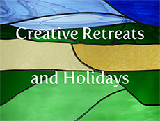
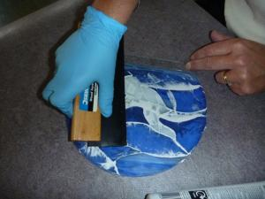

Tired of the daily grind?
Worn to a frazzle? Need a break?
Discover talents that you never knew you had.

On a short break, holiday or retreat, learn the art of stained glass, glass appliqué or glass fusing in a small informal group or on a one – to –one basis. Relax as you learn to translate the landscape, sounds, sights and even smells into a coloured glass masterpiece.
Let us give you a chance to unwind, take a breather and relax.
We teach at our studio in the beautiful medieval village of Chilham, near Canterbury and also in hotels and retreat centres across the UK for groups of 4 – 6 people.